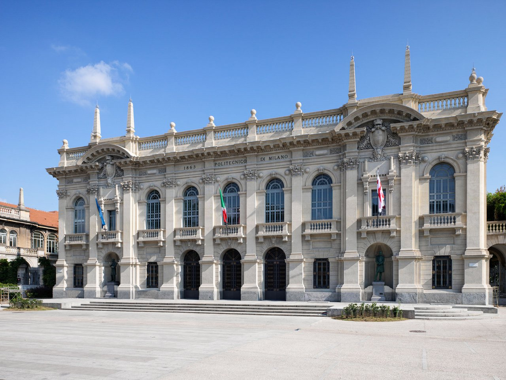
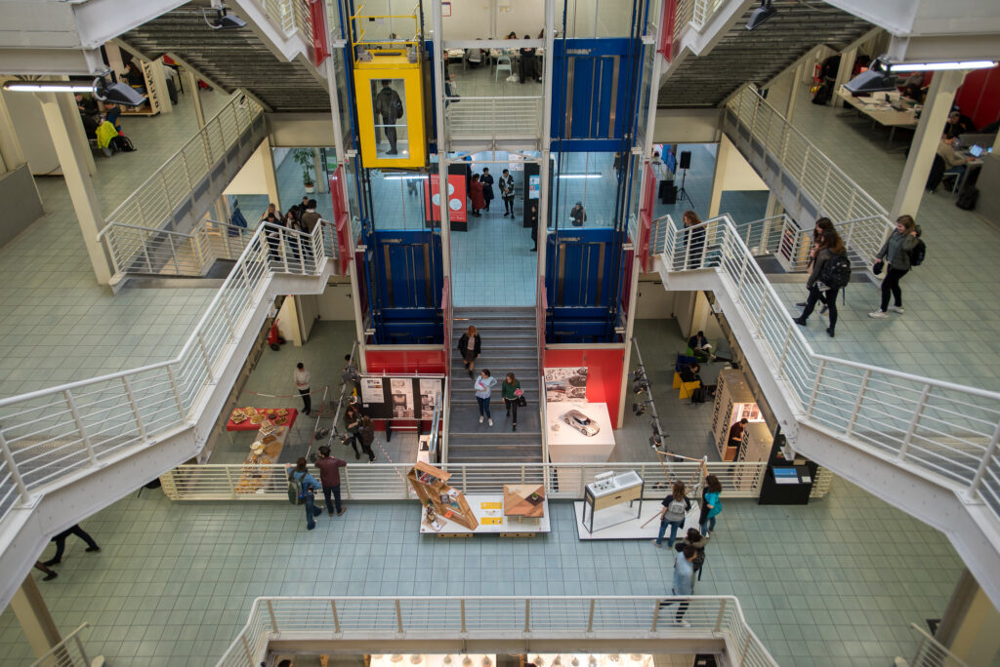
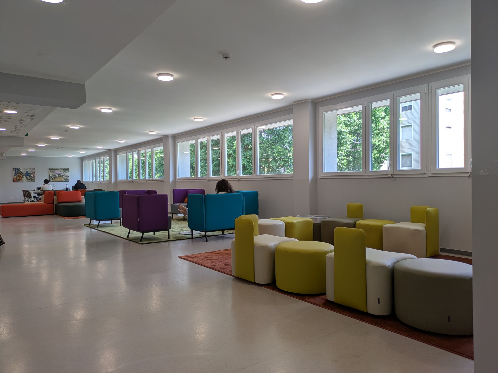

Intercambio
un viaje no tan largo
desde la Universidad de Chile
Por Violeta Santander y Fernanda Valenzuela
27 de noviembre, 2026
Las y los estudiantes de Diseño de la Universidad de Chile contamos con opciones de intercambio a instituciones tan relevantes como el Politécnico de Milán, la UBA, la Universidad de São Paulo, la UNAM y el Tecnológico de Monterrey.
Tales instituciones y la nuestra demuestran su relevancia apareciendo en las métricas del Ranking QS, un sistema londinense que opera en dos vertientes: QS World University Rankings, centrada en el desempeño institucional general, y QS World University Rankings by Subject, que en nuestro caso corresponde a Art and Design. En el panorama de educación superior actual, contar con presencia en ambas vertientes cuenta como ventaja evidente sobre aquellos programas invisibles a las métricas de QS.
A continuación se muestra lo que deberías saber si tu intención es irte de intercambio al Politécnico de Milán.


Diferencia entre universidades de origen y destino
En su versión publicada el 18 de junio de 2026, son las instituciones que cuentan en el Ranking QS para Universidades.
Según tal ranking, un intercambio desde la Universidad de Chile al Politécnico de Milán implica moverse entre los lugares y del mundo.
La diferencia de posiciones se explica cuando se consideran las siguientes dimensiones:
En el gráfico, mientras más lejos del centro, mejor puntaje. La Universidad de Chile lidera en reputación académica (92,0 puntos frente a 84,5 del Politécnico) y en resultados de empleabilidad (95,7 frente a 66,3). En los otros cinco ámbitos lidera el Politécnico de Milán: en reputación entre empleadores (93,6 frente a 85,1), en citas por docente (54,2 frente a 16,0), en docentes internacionales (75,9 frente a 10,6), en estudiantes internacionales (72,9 frente a 8,2) y en sostenibilidad (86,2 frente a 66,4). La mayor brecha está en la internacionalización.
Diferencia entre escuelas de origen y destino
En su versión publicada el 25 de marzo de 2026, son las instituciones consideradas en el Ranking QS para el área de Arte y Diseño. Según este ranking, un intercambio desde Diseño de la Universidad de Chile a Politécnico de Milán implica moverse entre los lugares y del mundo.
La diferencia de posiciones se explica cuando se consideran las siguientes dimensiones:
En el gráfico, nuevamente mientras más lejos del centro, mejor; por eso las posiciones están invertidas y el lugar 1 equivale a 100. En este caso el Politécnico de Milán lidera en los cuatro ámbitos. En reputación académica logra 82,8 puntos frente a 52,5 de Diseño de la Universidad de Chile, y ocupa el lugar 10 frente al 186. En reputación entre empleadores alcanza 87,4 puntos frente a 78,5, y el lugar 13 frente al 37. La distancia es mayor en lo académico que en lo laboral.
La escuela de diseño en Politécnico de Milán
Es una universidad pública italiana que se especializa en ingeniería, arquitectura y diseño. Es reconocida por tener un enfoque científico, tecnológico e industrial, abordando el diseño desde la ingeniería, los materiales y la resolución de problemas reales. Es considerada una de las mejores escuelas, posicionándose en el 7° lugar en la categoría de Art & Design, según el QS World University Rankings by Subject (2026), lo que la convierte en una escuela muy prestigiosa a nivel internacional.


Debido a su ubicación, tiene una gran colaboración con instituciones académicas y empresas de todo el mundo, garantizando prácticas valiosas y una red de contactos internacional. Además ofrece una amplia oferta académica que incluye grados, másteres y doctorados, los que son impartidos en italiano e inglés, promoviendo la inscripción de estudiantes internacionales. Por último, es importante tener en cuenta:
- Es una escuela orientada al diseño industrial y la ingeniería.
- La mayoría de los programas de intercambio y cursos internacionales se imparten en inglés, por lo que contar con un buen dominio del idioma es clave para aprovechar la oferta académica, aunque el italiano sigue siendo relevante para la vida cotidiana.
- Su metodología de enseñanza se caracteriza por un fuerte vínculo entre teoría, investigación y desarrollo de proyectos aplicados.
- Estudiar en Milán ofrece acceso a importantes eventos y empresas vinculadas al diseño, como la Milano Design Week y numerosas firmas del sector.
Cómo postular a un intercambio
Como estudiante de Diseño de la Universidad de Chile, puedes optar por 2 vías para realizar un intercambio internacional presencial:
- Nivel Central (PME): Gestionado de forma central por el Programa de Movilidad Estudiantil de la Dirección de Relaciones Internacionales para toda la universidad.
- Nivel FAU: Gestionado de manera independiente por la oficina de relaciones internacionales de cada unidad académica mediante convenios específicos.
La opción a nivel de FAU puede resultar más conveniente debido a la especificidad de sus convenios, con un enfoque de carácter directamente disciplinar, ajustándose mejor a las asignaturas, áreas de estudio y requerimientos de Diseño.